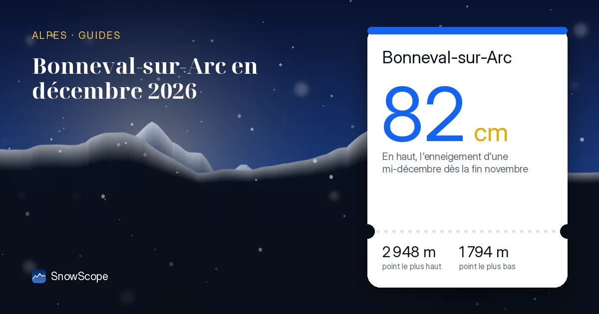

Bonneval-sur-Arc en décembre 2026 : 82 cm en haut, l'enneigement d'une mi-décembre dès la fin novembre
Bonneval-sur-Arc a 82 cm de neige en haut de ses pistes ce vendredi 27 novembre, et 67 cm à 2 371 m, contre 38 cm une fin novembre habituelle. Le petit domaine de Haute-Maurienne est donc l'un des mieux enneigés des Alpes françaises pour l'ouverture de saison.
Consultez les prévisions neige en temps réel pour Bonneval-sur-Arc sur l'application SnowScopeHauteurs de neige, alertes poudreuse et carte 3D, gratuitement.
Bulletin du jour
Haut du domaine : 82 cm. Neige fraîche : 15 cm mercredi, 75 cm sur sept jours. Prévisions : sec et froid jusqu'à lundi 30 novembre, très peu de neige annoncée ensuite. Le domaine s'étage de 1 794 m à 2 948 m, avec le glacier du Vallonnet en arrière-plan.
Par temps froid et sec, la neige reste de bonne qualité en face nord ; au soleil, elle se transforme l'après-midi. Le vent peut former des plaques sur les crêtes après les chutes de la semaine.
Pourquoi Bonneval est si bien enneigé
Le village est au bout de la Haute-Maurienne, au pied du col de l'Iseran, et reçoit la neige des retours d'est qui passent par l'Italie toute proche aussi bien que celle des perturbations d'ouest. Cet automne, il a profité des deux : la neige du mercredi est arrivée par le sud-est.
Sa hauteur compte aussi : le village est déjà à 1 794 m, l'un des plus hauts de Savoie. En moyenne, une couche de 30 cm s'installe ici vers la mi-novembre, et le meilleur hiver de la série, 2003-04, a culminé à 240 cm.
Ce que disent 46 hivers pour décembre
À 2 371 m, la hauteur habituelle est de 52 cm le 8 décembre, 66 cm le 15 décembre et 80 cm à Noël. Cette année, la neige de fin novembre dépasse déjà la valeur normale de la mi-décembre.
Un hiver sur quatre a moins de 64 cm le 25 décembre, un sur quatre plus de 104 cm. Une couche de 50 cm au 1er janvier a été atteinte dans 87 % des hivers. Le plus maigre, 2021-22, a tout de même culminé à 102 cm.
Un village à part
Bonneval est classé parmi les plus beaux villages de France : maisons de pierre, toits de lauzes, pas de grands immeubles. Le domaine skiable est petit, mais haut, et souvent très calme en semaine.
Les skieurs y viennent pour la neige, la randonnée à ski et le ski de fond ; les familles pour le calme. Le village est aussi la porte de la vallée de l'Écot et des grandes courses du Parc national de la Vanoise.
Et pour Noël ?
Avec 67 cm dès la fin novembre à 2 371 m, le village part avec presque la neige d'un Noël normal, qui est de 80 cm. Les fêtes y sont tranquilles : quelques hôtels et gîtes, des familles fidèles et pas de foule aux remontées. Il faut réserver tôt, car les lits sont peu nombreux.
Pour un séjour plus varié, Val Cenis et Bessans sont à quelques kilomètres : Bessans pour le ski de fond sur l'un des plus beaux plateaux nordiques des Alpes, Val Cenis pour un grand domaine de pistes. Une semaine à Bonneval permet ainsi d'alterner le petit domaine haut perché, le fond et les journées sur un grand domaine voisin.
Venir et skier
En hiver, le col de l'Iseran est fermé : on arrive par la vallée de la Maurienne, via Modane et Lanslebourg. Les équipements hiver sont obligatoires sur la route.
Les hauteurs du jour en bas, au milieu et en haut du domaine sont sur la page enneigement de Bonneval-sur-Arc.
Conseils aux skieurs
- Profitez des semaines de début décembre : la neige est déjà là et le village est presque vide.
- Commencez par les pistes en face nord, plus froides, et gardez les pentes au soleil pour l'après-midi.
- Hors-piste : prudence après une semaine aussi neigeuse, consultez le bulletin d'avalanche chaque jour.
- Comparez avec les autres stations sur la page France et la page Alpes.
À propos de ces chiffres
Chiffres de neige : la carte et la prévision SnowScope du jour, et notre historique de 46 hivers passés pour chaque station (une estimation pour la zone, pas le bulletin de la station).
Bulletins d'avalanche officiels: Météo-France – Bulletin d'estimation du risque d'avalanche
Citer ce bulletin
Pour la recherche, l'enseignement ou la presse : chiffres et graphiques réutilisables librement sous CC BY 4.0 avec cette citation.
SnowScope (2026), Bonneval-sur-Arc en décembre 2026 : 82 cm en haut, l'enneigement d'une mi-décembre dès la fin novembre, https://snowscope.app/blog/fr/2026/11/bonneval-sur-arc-decembre-2026-enneigement-deja-celui-de-la-mi-decembre.html, consulté le 2026-11-27
SnowScope (Atlas Labs). (2026, November 27). Bonneval-sur-Arc en décembre 2026 : 82 cm en haut, l'enneigement d'une mi-décembre dès la fin novembre. SnowScope snow reports. https://snowscope.app/blog/fr/2026/11/bonneval-sur-arc-decembre-2026-enneigement-deja-celui-de-la-mi-decembre.html
BibTeX
@misc{snowscope2026bonnevalsurarcdecembre20,
author = {{SnowScope (Atlas Labs)}},
title = {Bonneval-sur-Arc en décembre 2026 : 82 cm en haut, l'enneigement d'une mi-décembre dès la fin novembre},
year = {2026},
month = nov,
howpublished = {\url{https://snowscope.app/blog/fr/2026/11/bonneval-sur-arc-decembre-2026-enneigement-deja-celui-de-la-mi-decembre.html}},
note = {Published 2026-11-27 23:57 UTC; accessed 2026-11-27}
}· CC BY 4.0 · Méthodes, données et outils →
Bonneval-sur-Arc : neige et température selon l'altitude, cet hiver vs l'hiver dernier (outils) →
Suivre Bonneval-sur-Arc
Gratuit : un message quand la neige arrive, et la météo chaque matin.